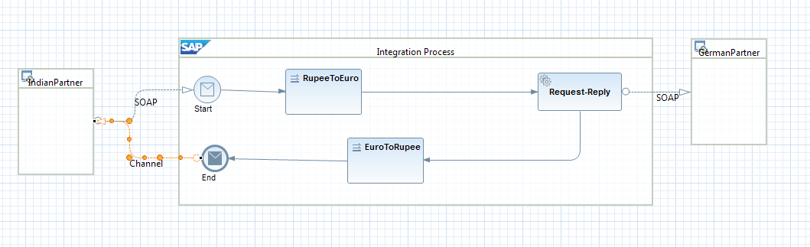

Defining Request-Reply
Context
You can use this task to enable request and reply interactions between sender and receiver systems.
Example:
Suppose a currency conversion is required for a transaction between Indian and German business partners. In such a scenario, using the Request Reply pattern, a user can successfully convert Indian currency to German currency and vice versa. As shown in the integration flow, the request mapping converts the currency in the payload to Euro and reply mapping converts the currency in the payload back to Indian Rupee.
Procedure
-
From the Palette, select
 Others
Others  Receiver
Receiver  , and drop it outside the Integration
Process pool.
, and drop it outside the Integration
Process pool.